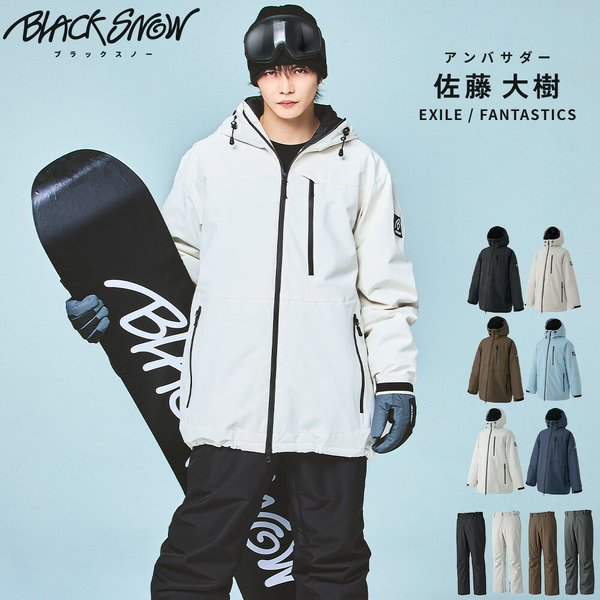
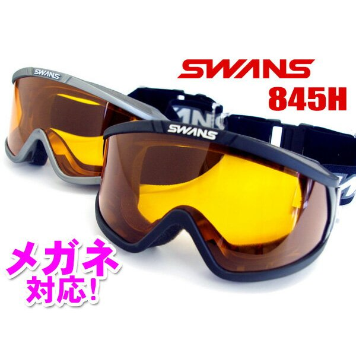
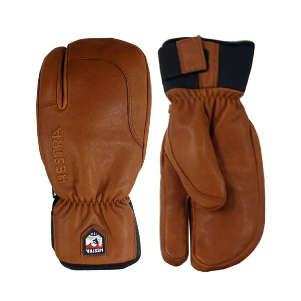
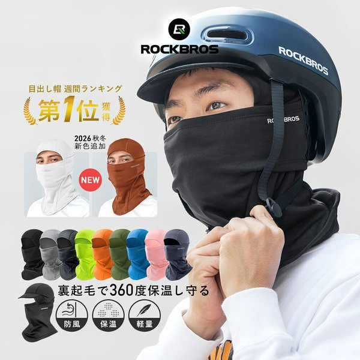
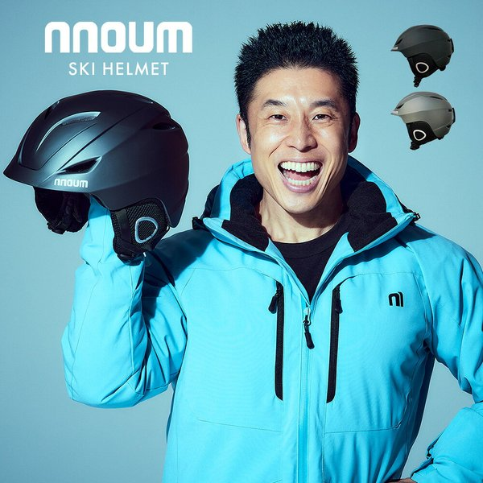
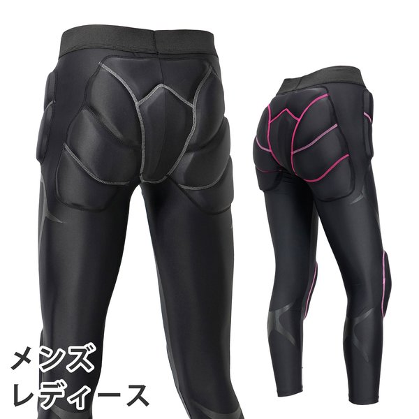
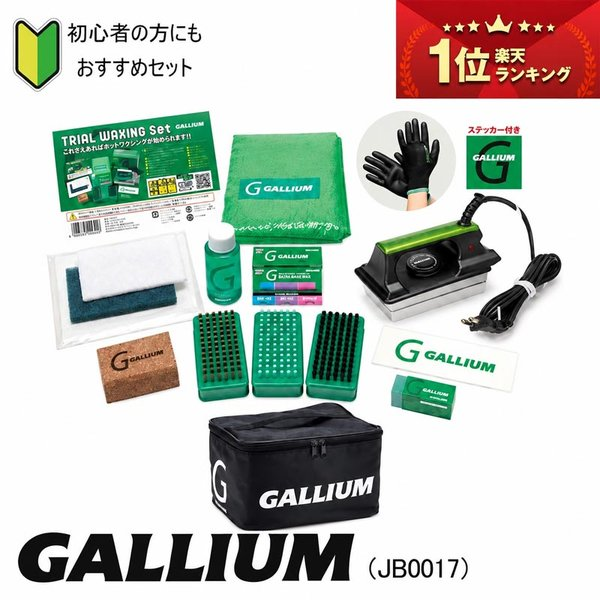
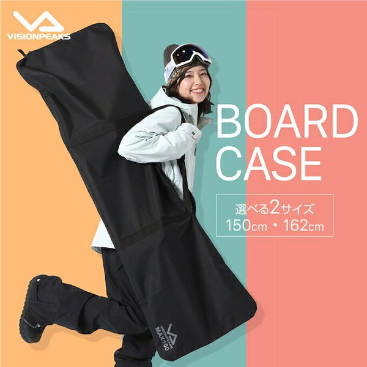
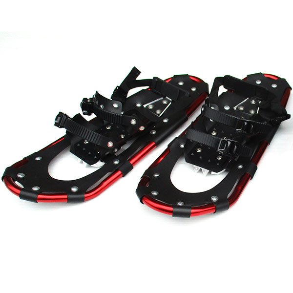
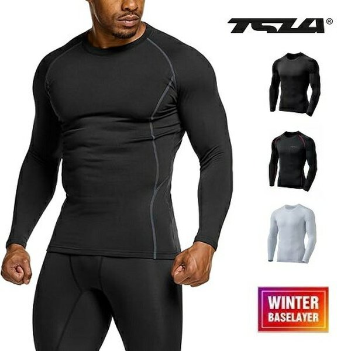

【2026年・スキー・スノボ】ゲレンデ装備10選｜BLACKSNOWのウェア・SWANS 845Hゴーグル・HESTRAのレザーグローブ・NNOUMヘルメット・VAXPOTプロテクター・GALLIUMワックスセット・VISIONPEAKSケースを実売価格で比較
ゲレンデの持ち物は、寒さと転倒の2つに分けて考えると揃えやすくなります。寒さにはウェア・インナー・グローブ・ネックウォーマー、転倒にはヘルメットとプロテクター。この2系統が揃えば、初日から1日滑り切れます。
選ぶ軸は3つです。「まず雪と寒さの強さ」。日本海側のゲレンデは湿った雪が多く、耐水20,000mmのウェアと防水のグローブが要向きます。「次に自分の滑り方」。コースを流すだけならヘルメットとプロテクターで十分、キッカーやパークに入るならプロテクターの範囲を広げます。「最後に移動のしやすさ」。板とブーツはケースに入れると、車内や電車が汚れません。なお、レビュー件数が50件に満たない商品は記事内に実数を明記しています。
本記事では、楽天市場で人気・高評価のスキー・スノボ・ゲレンデ装備10選を、実売価格とレビュー評価つきで写真付き紹介します。
- おすすめ10選 スペック・特徴比較表
- BEST 1｜スノーボードウェア 上下セット BLACKSNOW OT03M×OB02M
- BEST 2｜SWANS スノーゴーグル 845H（眼鏡対応・くもり止め）
- BEST 3｜HESTRA 3フィンガー フルレザーショート 30872
- BEST 4｜ROCKBROS 防寒バラクラバ フード付きネックウォーマー
- BEST 5｜NNOUM スキー・スノーボードヘルメット（アジアンフィット・ケース付き）
- BEST 6｜VAXPOT ヒッププロテクター ロングタイプ VA-3008（膝パッド付き）
- BEST 7｜GALLIUM ガリウム JB0017 トライアルワクシングセット
- BEST 8｜VISIONPEAKS スノーボードケース VP130901H02（162cmまで・2way）
- BEST 9｜コンパル アルミ・スノーシュー M-53（収納袋付き）
- BEST 10｜TESLA 裏起毛コンプレッションインナー 長袖（メンズ）
- 【読者負担0円】買わなくても得する無料サービス
- まとめ：スキー・スノボ装備10選の選び方
| 順位 | 商品名 | ブランド | 最大の特徴・おすすめ理由 | 総合評価 |
|---|---|---|---|---|
| BEST 1 | スノーボードウェア 上下セット BLACKSNOW OT03M×OB02M | BLACKSNOW（ブラックスノー） | 上下セットなので着るものを選ばなくてよい | 4.74 |
| BEST 2 | SWANS スノーゴーグル 845H（眼鏡対応・くもり止め） | SWANS（スワンズ） | 眼鏡をかけたまま装着できる | 4.63 |
| BEST 3 | HESTRA 3フィンガー フルレザーショート 30872 | HESTRA（ヘストラ） | 3フィンガーで指先が暖かい | 4.80 |
| BEST 4 | ROCKBROS 防寒バラクラバ フード付きネックウォーマー | ROCKBROS（ロックブロス） | 頭から首まで1枚で覆える | 4.49 |
| BEST 5 | NNOUM スキー・スノーボードヘルメット（アジアンフィット・ケース付き） | NNOUM（ノアム） | アジアンフィットで頭に馴染む | 4.53 |
| BEST 6 | VAXPOT ヒッププロテクター ロングタイプ VA-3008（膝パッド付き） | VAXPOT（バックスポット） | 腰から膝まで1枚で守れる | 4.33 |
| BEST 7 | GALLIUM ガリウム JB0017 トライアルワクシングセット | GALLIUM（ガリウム） | アイロンまで揃ったセットで始められる | 4.60 |
| BEST 8 | VISIONPEAKS スノーボードケース VP130901H02（162cmまで・2way） | VISIONPEAKS（ビジョンピークス） | 162cmまでの板が入る | 4.45 |
| BEST 9 | コンパル アルミ・スノーシュー M-53（収納袋付き） | COMPAL（コンパル） | アルミフレームで軽い | 4.75 |
| BEST 10 | TESLA 裏起毛コンプレッションインナー 長袖（メンズ） | TESLA（テスラ） | 裏起毛で肌寒さを防ぐ | 4.45 |
スノーボードウェア 上下セット BLACKSNOW OT03M×OB02M

BLACKSNOWのスノーボードウェア上下セットは、ジャケットとパンツが揃ったモデルです。耐水20,000mmの生地を使い、雪の上に座っても染みにくい作り。メンズ・レディースのサイズ展開があり、色違いで揃えれば家族や友人とゲレンデに出られます。楽天市場での実売価格は約8,900円（2026年11月時点）。
- 上下セットなので着るものを選ばなくてよい
- 耐水20,000mmで雪の上でも染みにくい
- サイズと色の展開が広い
- レビュー54件。色によっては在庫が薄く、サイズを選べないことがある
SWANS スノーゴーグル 845H（眼鏡対応・くもり止め）

SWANSの845Hは、眼鏡の上から装着できるスノーゴーグルです。レンズにはくもり止めの加工が入り、リフトの下で止まっても視界が白くなりにくいのが特徴。フレームは細身で、ヘルメットの上からでもかさばりません。楽天市場での実売価格は約5,280円（2026年11月時点）。
- 眼鏡をかけたまま装着できる
- くもり止め加工でリフト待ちでも見える
- 細身のフレームでヘルメットと干渉しにくい
- 眼鏡の上から付けるぶん、度付きゴーグルより視界の端が狭くなる
HESTRA 3フィンガー フルレザーショート 30872

HESTRAはスウェーデンのグローブメーカーで、30872は人差し指だけを分けた3フィンガーのレザーグローブです。指をまとめるぶん指先が暖かく、レザーが雪とリフトのロープに強いのが利点。手首のカフが短いショートタイプで、ジャケットの袖口に収まります。楽天市場での実売価格は約16,500円（2026年11月時点）。
- 3フィンガーで指先が暖かい
- 本革で雪とロープに強い
- ショートカフで袖口に収まる
- レザー製のため、使い始めは硬く、定期的な革の手入れが要る
ROCKBROS 防寒バラクラバ フード付きネックウォーマー

ROCKBROSの防寒バラクラバは、頭から首までを1枚で覆うフード付きの防寒具です。裏起毛のフリースで、口元まで覆えばゴーグルの下からの冷気を防げます。ヘルメットの下に着けるインナーキャップとしても使え、自転車やバイクの通勤にも回せます。楽天市場での実売価格は約1,699円（2026年11月時点）。
- 頭から首まで1枚で覆える
- 裏起毛で口元の冷気を防ぐ
- ヘルメット下のインナーにも使える
- 目出しタイプなので、着けたままでは食事や会話がしにくい
NNOUM スキー・スノーボードヘルメット（アジアンフィット・ケース付き）

NNOUMのヘルメットは、日本人の頭の形に合わせたアジアンフィットの設計です。後頭部のダイヤルでサイズを合わせられ、軽量なので1日かぶっても首が疲れにくいのが特徴。収納ケースが付き、シーズンオフの保管にも困りません。楽天市場での実売価格は約6,980円（2026年11月時点）。
- アジアンフィットで頭に馴染む
- ダイヤルでサイズを微調整できる
- 専用ケース付きで保管できる
- レビュー64件。ゴーグルとの相性はフレームの形によって変わる
VAXPOT ヒッププロテクター ロングタイプ VA-3008（膝パッド付き）

VAXPOTのVA-3008は、腰から太もも、膝までを1枚で覆うロングタイプのプロテクターです。NBR素材のパッドを当て、転んだときの衝撃をやわらげます。パンツの下に履ける薄さなので、見た目を変えずに滑れます。楽天市場での実売価格は約4,099円（2026年11月時点）。
- 腰から膝まで1枚で守れる
- NBRパッドで衝撃を吸収
- パンツの下に履ける薄さ
- この出品は返品・交換に応じていないため、サイズは注文前に確認する
GALLIUM ガリウム JB0017 トライアルワクシングセット

GALLIUMのJB0017は、ホットワックスの道具を一式にまとめたセットです。ワックスとアイロン、スクレーパー、ブラシが入り、届いた日から板のメンテナンスを始められます。滑走面の汚れを落としてワックスを入れると、雪の抵抗が減って滑り出しが変わります。楽天市場での実売価格は約12,780円（2026年11月時点）。
- アイロンまで揃ったセットで始められる
- 滑走面の手入れを自宅で完結できる
- 板を長く使うほど効果が出る
- レビュー5件とまだ少なく、一式そろえるぶん最初の出費は大きい
VISIONPEAKS スノーボードケース VP130901H02（162cmまで・2way）

VISIONPEAKSのボードケースは、162cmまでの板が入る2wayタイプです。ショルダーとハンドルの2通りで持て、電車や車での移動に向きます。板とブーツの汚れを分けて運べるので、帰りの車内が濡れません。楽天市場での実売価格は約2,030円（2026年11月時点）。
- 162cmまでの板が入る
- ショルダーとハンドルの2通り
- 板の汚れを車内に持ち込まない
- 2wayタイプのため、リュックのように背負うことはできない
コンパル アルミ・スノーシュー M-53（収納袋付き）

コンパルのM-53は、アルミフレームのスノーシューです。かんじきのベルトを靴に固定し、雪の上で足が沈むのを抑えます。収納袋が付き、ゲレンデのない里山や公園の雪道でも歩けます。除雪のあとの庭仕事にも使えます。楽天市場での実売価格は約7,780円（2026年11月時点）。
- アルミフレームで軽い
- 収納袋付きで持ち運べる
- ゲレンデ以外の雪道でも歩ける
- レビュー4件と少なく、店頭で試せないぶんサイズは自分の靴で確かめる
TESLA 裏起毛コンプレッションインナー 長袖（メンズ）

TESLAのコンプレッションインナーは、裏起毛の生地で肌に密着する長袖です。上にウェアを着れば、冷えたリフトの上でも肌寒さを感じにくくなります。伸縮性があるので、滑るときの腕の動きを妨げません。楽天市場での実売価格は約2,190円（2026年11月時点）。
- 裏起毛で肌寒さを防ぐ
- 伸縮性があり動きを妨げない
- 普段の防寒インナーにも回せる
- レビュー44件と50件未満。裏起毛なので汗をかくと乾きにくい
この記事の商品を買う前に、まずは無料で得する選択肢をチェック。どれも登録・利用は0円で、無料期間中に解約すれば料金はかかりません。読みたい雑誌がある人、ポイントを貯めたい人、アンケートなら気軽という人、それぞれに合うものを選べます。
初回31日無料・無料期間中に解約すれば0円 → 楽天ポイントモール｜登録無料で毎日ポイ活
買い物なしでもポイントが貯まる無料サービス → 楽天インサイト｜アンケートに答えてポイント
登録無料・すきま時間のアンケートで貯まる → 楽天カード｜年会費永年無料
新規発行・年会費ずっと0円 →
4つのサービスの違いと使い分けは「出費0円で得する！買わずにポイントが貯まる無料サービス厳選4選」でまとめています。
💡 まとめ：スキー・スノボ装備10選の選び方
ゲレンデ装備は、寒さ対策と転倒対策を1つずつ揃えるところから始めると失敗しません。寒さ対策は、BLACKSNOWのウェア上下、TESLAの裏起毛インナー、HESTRAの3フィンガーレザーグローブ、ROCKBROSの防寒バラクラバ。転倒対策は、NNOUMのアジアンフィットヘルメットとVAXPOTのヒッププロテクター。目元はSWANSの845Hで、眼鏡の上から着けられます。板の手入れを自分でやるならGALLIUMのワックスセット、移動用にはVISIONPEAKSのボードケース。ゲレンデのない里山の雪道を歩く日は、コンパルのスノーシューがあると足が取られます。まずはウェアとヘルメットから揃え、季節のセールで残りを足していくと、シーズンを通して無駄がありません。
楽天市場では「5と0のつく日」や「お買い物マラソン」などのキャンペーンに合わせて購入すると、ポイント還元が最大化してお得に手に入ります。ぜひチェックしてみてくださいね。